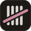

Brand board · v1
Every transaction,
counted.
Tally is a personal ledger. Petrol-green cloth, chalk-white figures, and a single orange stroke for whatever needs your attention.

Logo
Four counted, one struck.
A tally is the oldest way to keep count of money owed. Four chalk strokes, then a fifth drawn across them in rubric orange, the ink that scribes used for ledger totals. The diagonal also reads as a line trending up. In the wordmark, the bars are cut to the exact height of the two l’s.
Colour
Petrol, chalk, and one orange.
Surfaces step up in even lightness from the page to menus. Text is chalk, never pure white. Orange is reserved for the brand and the primary action, so when it appears it means something.
6.2:1 with ink text
15.1:1
9.0:1
6.1:1
Type
One face to name things, one to read them.
Bricolage Grotesque gives titles and headline figures a slightly hand-cut character. Instrument Sans carries the dense table text. Both have true tabular figures, so amounts line up to the cent.
Page titles, the wordmark, headline figures. Tight tracking (−1.5% to −4%).
Tables, forms, navigation. 13px in the ledger, 15px for reading.
Components
The same few moves everywhere.
The tally stroke is the system’s one recurring device: it marks the page you’re on, the suggestion you’re about to pick, and a transaction that’s been counted as cleared.